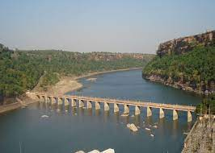

River valley projects involve the construction of a gigantic single dam or series of small dams on a river and on its tributaries.
Ever since, dealing with water resources has been one of the primary aims because of which multi-purpose river valley projects have been gaining importance.
The purpose of these projects are to fulfil the need of irrigation, flood control and generation of hydro-electricity along with fishing and recreation through navigation.
The Bhakra-Nangal dam is one of the earliest river valley development schemes undertaken after the independence of India.
The project was signed by then Punjab Revenue Minister Sir Chhotu Ram in November 1944 with the king of Bilaspur and was finalised on January 8, 1945.
Cambal project

Chambal Valley Project started in Rajasthan – 1953-54 Rajasthan's share – 50% Gandhisagar Dam – of Chambal Project Madhya Pradesh in 1959 in the first phase Near Chaurasigarh Place The dam built between the plateaus of Rampura Manpura Kota Irrigation Dam – Kota Thermal Power home set up.